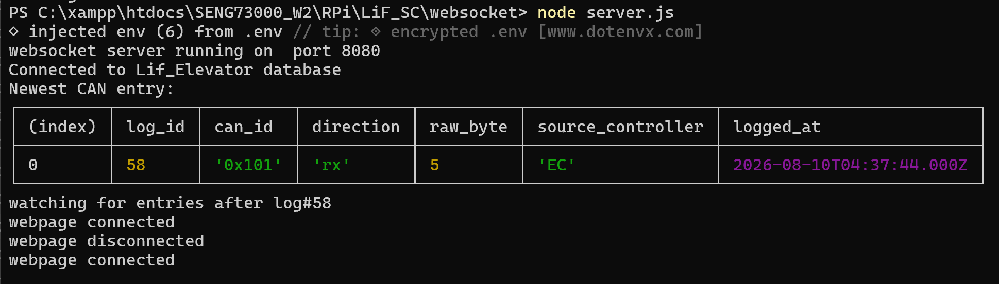
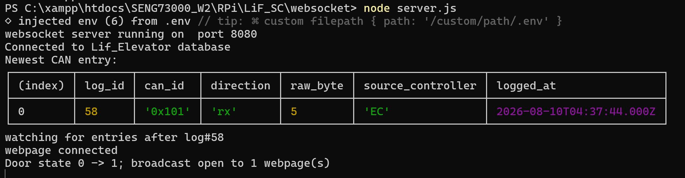

Door Status Changed
The door status originally behaved like a simple SQL Boolean. That was
not enough once both the website and the physical door switch could
change the state. I expanded the doors_open value into a
packed two-bit state and updated the website path so all open control
pages can follow changes made by either source.
The value can now use the range 0b00 through
0b11. The low bit is still the normalized door position
used by the website:
even value -> doors closed
odd value -> doors open
Bit 1 is used by the Raspberry Pi side to record who made the latest
change. The remaining hardware-side bit can be retained without
changing the website display. This allows the database to store more
information than a normal Boolean while the browser still receives a
simple true or false.
Why exact comparisons stopped working
The old code used a comparison similar to:
Number(rows[0].doors_open) === 1
That only recognizes raw value 1. With two bits, an open
state can also have other metadata bits set. The correct test masks
everything except bit 0:
const doorsOpen = (doorState & 1) === 1;The same rule is used in PHP:
$doorState = (int) $elevatorState['doors_open'];
$initialDoorsOpen = ($doorState & 1) === 1;This produces the following website interpretation:
| Raw value | Binary | Website state |
|---|---|---|
| 0 | 000 |
Closed |
| 1 | 001 |
Open |
| 2 | 010 |
Closed |
| 3 | 011 |
Open |
This also means expanding from 0b11 to
0b111 does not require the UI to understand every raw
combination. It only needs the low position bit.
The existing MariaDB TINYINT column is already large
enough to store values 0 to 7. The number in a definition such as
TINYINT(1) is not a one-bit storage limit, so the
important change was the meaning of the value and the code that
decodes it rather than changing to a larger SQL integer type.
Website-originated door changes
When the user presses the door button,
elevator_control.js calls
sendDoorState() and sends a normal form-style POST to
elevator_control.php:
request_action = door
door_state = open or closed
PHP validates that only open or closed was
submitted. It updates the ElevatorCar object using
openDoors() or closeDoors(), converts the
object state into the website-originated database value, and updates
elevator_state.state_id = 1 with a prepared statement.
After PHP confirms success, handleDoorResponse() updates
the local display and sends a small WebSocket notification to Node:
elevatorSocket.send(JSON.stringify({
type: "door_state_changed"
}));The browser does not send the final raw database state to Node. It only announces that something changed. Node then queries MariaDB for the authoritative value.
Raspberry Pi and physical-switch changes
A website message cannot help when the Raspberry Pi changes the
database after reading the physical door switch. To support these
independent changes, I added a lightweight
checkDoorState() database watcher in
server.js.
Node stores the last complete raw value:
let lastDoorState = null;Every 500 ms, the function reads the single elevator-state row:
SELECT doors_open
FROM elevator_state
WHERE state_id = 1
LIMIT 1The first successful check initializes the cache. Later checks immediately return if the raw value has not changed:
if(doorState === lastDoorState) {
return;
}Because the complete packed number is cached, Node can detect a metadata/source change as well as an open/closed change. It then normalizes bit 0 and broadcasts one message:
broadcast({
type: "elevator_state",
doors_open: (doorState & 1) === 1
});The browser only has to handle a Boolean:
if(message.type === "elevator_state") {
updateDoorDisplay(message.doors_open === true);
return;
}New webpage connections
lastDoorState is also used when another browser connects.
If Node already has a cached state, it immediately sends that state to
the new socket:
if(lastDoorState !== null) {
socket.send(JSON.stringify({
type: "elevator_state",
doors_open: (lastDoorState & 1) === 1
}));
}This stops a newly opened control page from waiting for the next physical change before it displays the correct doors.
Final flow
Website button
-> PHP validates and updates elevator_state
-> browser notifies Node
-> Node immediately re-reads MariaDB
-> Node broadcasts confirmed door position
Physical door switch / CAN
-> Raspberry Pi updates the packed SQL value
-> Node detects the raw-value change within 500 ms
-> Node broadcasts confirmed door position
All browsers
-> receive elevator_state
-> run updateDoorDisplay(true/false)The database is polled twice per second, but unchanged checks do not print messages or create WebSocket traffic. A broadcast is only produced when the stored raw door state actually changes.
Latest Node entry:

When I click the door on the website, Node updates it in its terminal and displays the transition:
